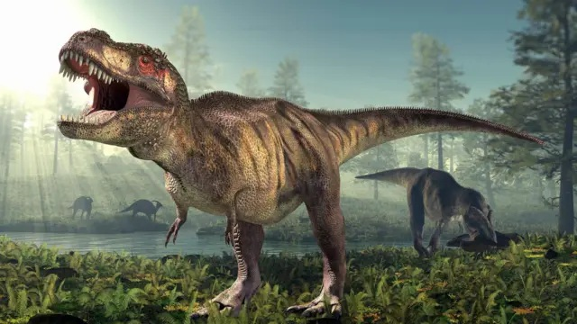
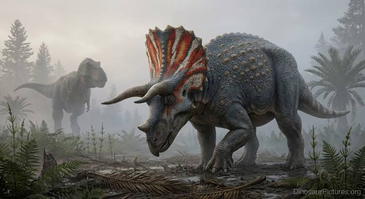
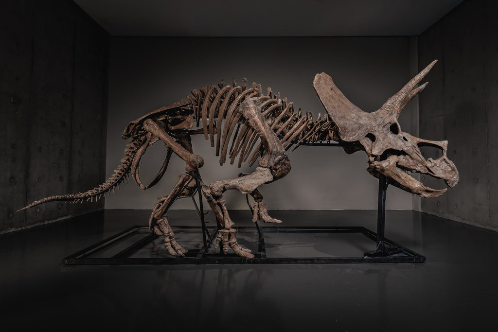
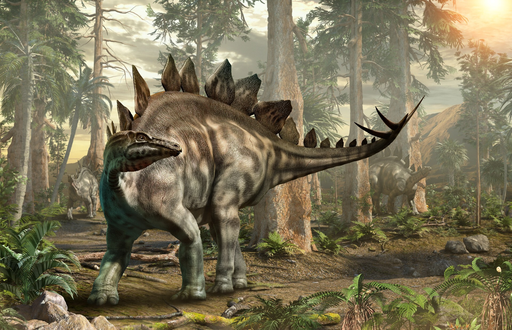
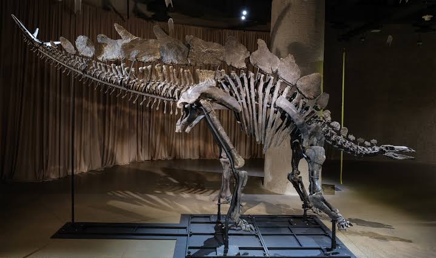
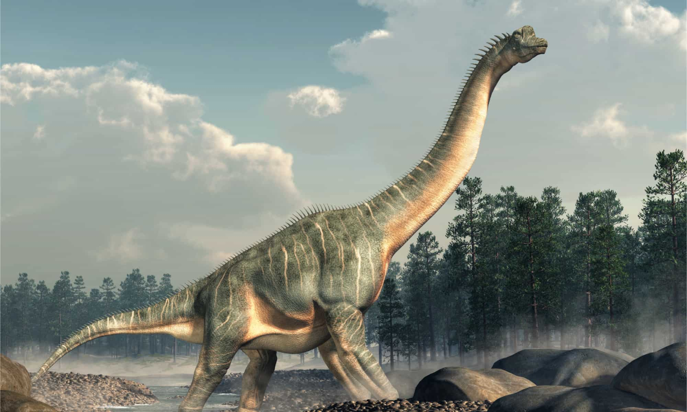
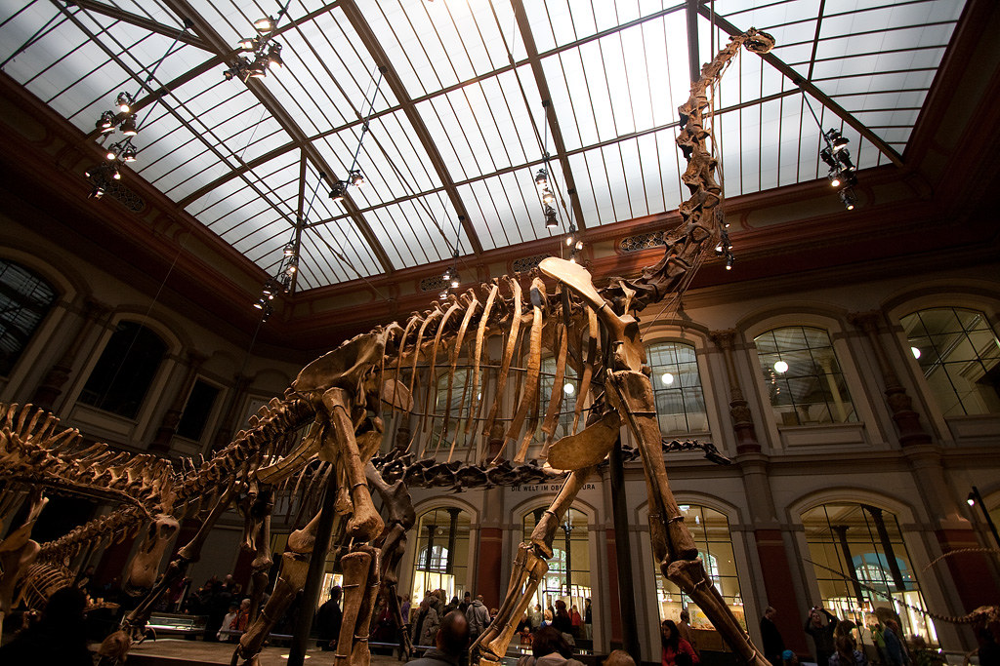
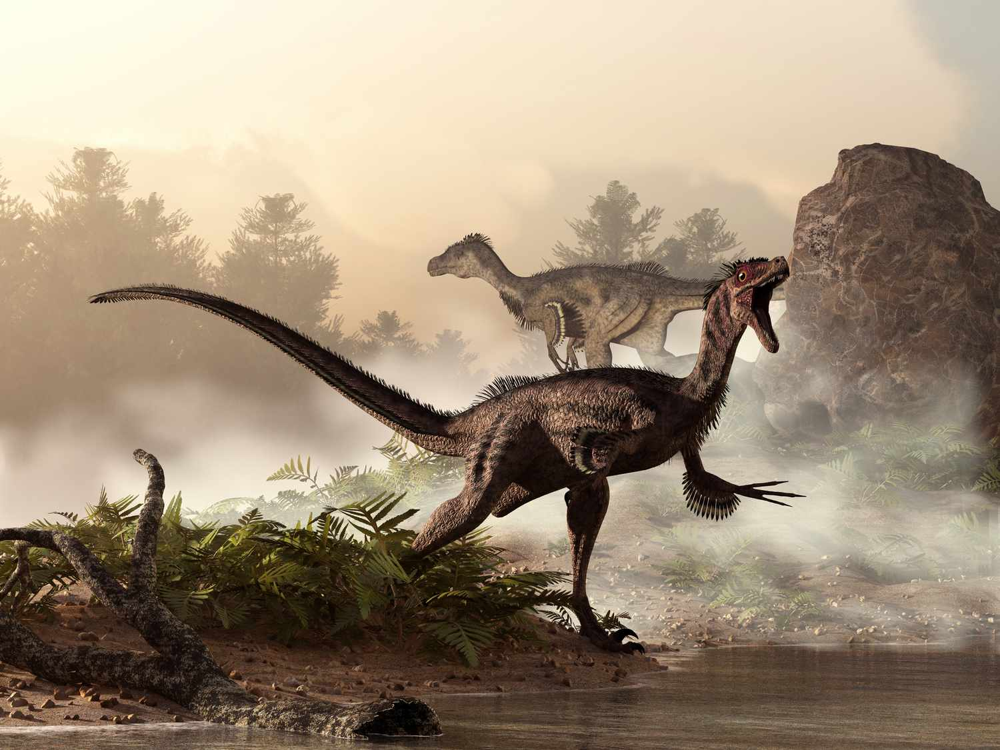
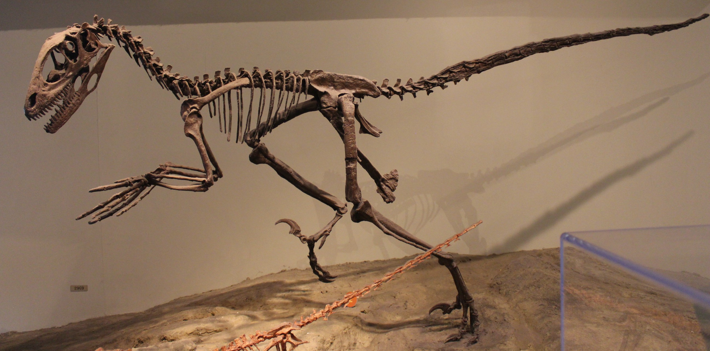

1.Tyrannosaurus Rex
วิวัฒนาการ : ปรากฏตัวช่วงปลายยุคครีเทเชียส ราว 68–66 ล้านปีก่อน
ยุคที่ถือกำเนิด : ครีเทเชียส (Late Cretaceous)
บรรพบุรุษที่เก่าแก่ที่สุด : สัตว์กลุ่ม Coelurosauria (ซีโลโรซอเรีย)เช่น Guanlong (กวนหลง)
ลักษณะ : เป็นไดโนเสาร์กินเนื้อขนาดใหญ่ เดินสองขา มีกรามและฟันที่แข็งแรงทรงพลัง สามารถบดขยี้กระดูกได้ มีขาหน้าหรือแขนที่เล็กมากเมื่อเทียบกับขนาดตัว ลำตัวยาวประมาณ 12 เมตร เป็นหนึ่งในผู้ล่าที่น่าเกรงขามที่สุดบนพื้นดิน


2.Triceratops
วิวัฒนาการ : วิวัฒนาการสายพันธุ์ช่วงปลายยุคครีเทเชียส ราว 68–66 ล้านปีก่อน
ยุคที่ถือกำเนิด : ครีเทเชียส (Late Cretaceous)
บรรพบุรุษที่เก่าแก่ที่สุด : สัตว์กลุ่ม Ceratopsia (เซราทอปเซีย) เช่น Yinlong (อินหลง)
ลักษณะ : เป็นไดโนเสาร์กินพืชสี่ขา ร่างกายใหญ่โตและบึกบึน มีจุดเด่นคือเขา 3 เขาบนใบหน้า (เขาเหนือตา 2 เขา และบนจมูก 1 เขา) พร้อมแผงกระดูกขนาดใหญ่บริเวณคอ ใช้สำหรับป้องกันตัวจากผู้ล่าและดึงดูดคู่


3.Stegosaurus
วิวัฒนาการ : รุ่งเรืองในช่วงปลายยุคจูแรสซิก ราว 155–150 ล้านปีก่อน
ยุคที่ถือกำเนิด : จูแรสซิก (Late Jurassic)
บรรพบุรุษที่เก่าแก่ที่สุด : สัตว์กลุ่ม Thyreophora (ไทรีโอฟอรา) เช่น Scelidosaurus (สเคลิโดซอรัส) ลักษณะ : เป็นไดโนเสาร์กินพืชสี่ขา มีแผ่นกระดูกทรงข้าวหลามตัดเรียงเป็นแถวคู่ตลอดแนวกระดูกสันหลังตั้งแต่คอถึงปลายTail ปลายหางมีหนามแหลมยาว 4 เล่มไว้ใช้โจมตีศัตรู มีสมองขนาดเล็กมากเมื่อเทียบกับขนาดตัว


4.Brachiosaurus
วิวัฒนาการ : ปรากฏตัวและแพร่กระจายในช่วงปลายยุคจูแรสซิก ราว 154–153 ล้านปีก่อน
ยุคที่ถือกำเนิด : จูแรสซิก (Late Jurassic)
บรรพบุรุษที่เก่าแก่ที่สุด : สัตว์กลุ่ม Sauropodomorpha (ซอโรโพโดมอร์ฟา) เช่น Eoraptor (อีโอแรปเตอร์)
ลักษณะ : เป็นไดโนเสาร์กินพืชขนาดมหึมา มีลำคอยาวมาก ขาคู่หน้ายาวกว่าขาคู่หลัง ทำให้ลำตัวลาดเอียงขึ้นคล้ายยีราฟ ช่วยให้สามารถกินใบไม้บนยอดไม้นสูงๆ ที่ไดโนเสาร์ตัวอื่นกินไม่ถึงได้


5.Velociraptor
วิวัฒนาการ : มีชีวิตอยู่ช่วงปลายยุคครีเทเชียส ราว 75–71 ล้านปีก่อน
ยุคที่ถือกำเนิด : ครีเทเชียส (Late Cretaceous)
บรรพบุรุษที่เก่าแก่ที่สุด : สัตว์กลุ่ม Dromaeosauridae (โดรเมโอซอริเด)
ลักษณะ : เป็นไดโนเสาร์กินเนื้อขนาดเล็ก ความสูงระดับเอวมนุษย์ ลำตัวปราดเปรียว มีขนนกปกคลุมตามร่างกาย เดินสองขา จุดเด่นคือมีกรงเล็บรูปเคี้ยวโค้งแหลมคมที่นิ้วเท้าข้างละหนึ่งเล่ม ว่องไว ล่าเหยื่อเป็นกลุ่มและมีความฉลาดสูง